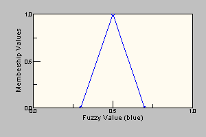
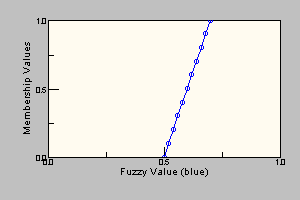

|
||||||||||
| PREV CLASS NEXT CLASS | FRAMES NO FRAMES | |||||||||
| SUMMARY: NESTED | FIELD | CONSTR | METHOD | DETAIL: FIELD | CONSTR | METHOD | |||||||||
java.lang.Object
|
+--nrc.fuzzy.ModifierFunction
|
+--nrc.fuzzy.AboveModifier
Concrete implementation of the above modifier. Consider the following example:
| Description | Visual Representation |
|---|---|
Unmodified fuzzy value:
|
 |
After Above modifier applied:
|
 |
ModifierFunction,
Modifiers,
Serialized Form| Field Summary |
| Fields inherited from class nrc.fuzzy.ModifierFunction |
DELTA_X, DELTA_Y, deltaX, deltaY, NUMBER_OF_POINTS, numberOfPoints, precisionControlType |
| Constructor Summary | |
AboveModifier()
|
|
AboveModifier(java.lang.String s)
|
|
| Method Summary | |
nrc.fuzzy.FuzzySet |
call(nrc.fuzzy.FuzzySet a)
Creates a new FuzzySet by applying the above modifier to an existing FuzzySet. |
nrc.fuzzy.FuzzyValue |
call(nrc.fuzzy.FuzzyValue fv)
Creates a new FuzzyValue by applying the above modifier to an existing FuzzyValue. |
| Methods inherited from class nrc.fuzzy.ModifierFunction |
concentrateDilute, expandSet, getName, setDeltaXPrecision, setDeltaYPrecision, setNumberOfPointsPrecision, setPrecisionControlType |
| Methods inherited from class java.lang.Object |
clone, equals, finalize, getClass, hashCode, notify, notifyAll, toString, wait, wait, wait |
| Constructor Detail |
public AboveModifier()
public AboveModifier(java.lang.String s)
| Method Detail |
public nrc.fuzzy.FuzzyValue call(nrc.fuzzy.FuzzyValue fv)
call in class ModifierFunctionfv - the fuzzy value to which the below modifier is applied.ModifierFunctionpublic nrc.fuzzy.FuzzySet call(nrc.fuzzy.FuzzySet a)
call in class ModifierFunctiona - the fuzzy set to be modifiedModifierFunction
|
||||||||||
| PREV CLASS NEXT CLASS | FRAMES NO FRAMES | |||||||||
| SUMMARY: NESTED | FIELD | CONSTR | METHOD | DETAIL: FIELD | CONSTR | METHOD | |||||||||